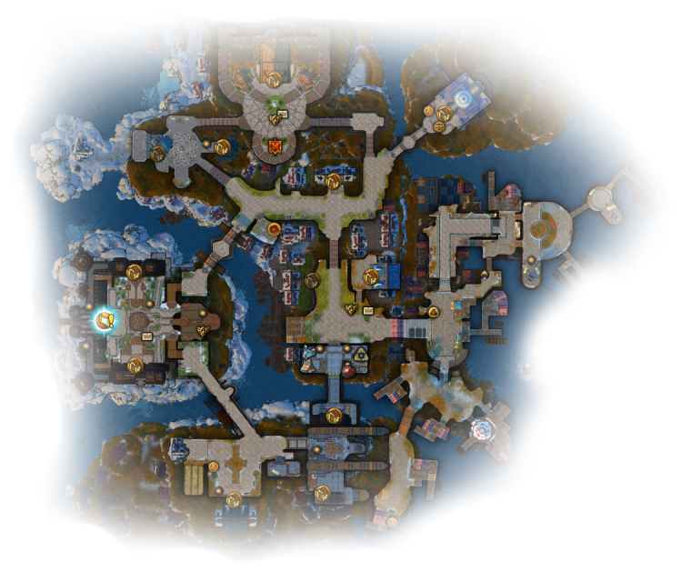

About Aranta:
The Elves were the first to arrive in the area, drawn by its natural beauty and seclusion.
They quickly established a village on the banks of the nearby river, where they could easily fish and hunt for food.
The Ashkalots arrived shortly after the Elves, having heard stories of the lush forests and abundant wildlife in the region.
They set up their own village a short distance away from the Elves, but still close enough to share resources and knowledge.
The Humans arrived some time later, though they had been exploring the area for many years prior.
Initially, they kept to themselves, but eventually they began trading with both the Elves and Ashkalots.
This led to an influx of people from all three races settling in the area, creating a diverse and vibrant community.
In time, this small settlement grew into what is now known as Aranta: a bustling city filled with artisans and merchants from all walks of life.
The city has seen its fair share of hardships throughout its history, but it has always persevered and continues to thrive today.
Other information:

Aranta Map
Landscapes of Aranta:
The city of Aranta is situated in the north near the great ocean, and its scenery is quite breathtaking.
The city is surrounded by majestic mountains and lush valleys, making it a beautiful place to visit.
The rolling hills and forests provide a pleasant backdrop to the city, while the ocean views are particularly stunning.
In the evenings, the sunsets over the horizon are especially stunning, with vibrant oranges, pinks, and purples that can be seen for miles.
During the day, the city is alive with activity, as tourists flock to the area to explore all that it has to offer.
Whether you're looking for a peaceful stroll through nature or an exciting day at the beach, Aranta has something for everyone.
Next, you can see some photos from Aranta:
-

Main viewing spot
-

The main square of Aranta
-

A peasant's fishing place
-

The bar is named after the fish caught in Aranta
-

The hotel is named after its owner